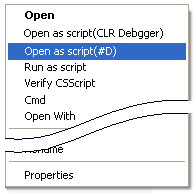
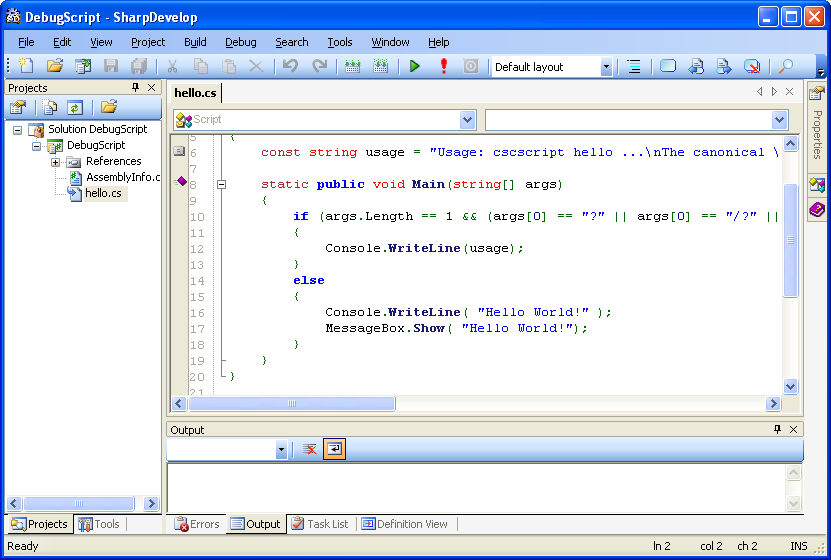

SharpDevelop (#Develop) is one of the Open Source alternatives to the Microsoft Visual Studio. Currently CS-Script can be integrated with version 2.0 of #Develop.
It is a reasonably stable and flexible IDE. The drawback is the absence of the integrated debugger. Thus, it must be used with an external debugger like MS CLR Debugger. But the integrated debugger is expected in the future releases (see SharpDevelop home page for details).
Open the script in #Develop by using shell extension:

After being activating by the user the 'shell extension' creates a temporary #Develop project, which includes all necessary source files and libraries. The project is automatically loaded into the new instance of #Develop. You can work now with this project as with any other #Develop project. After closing the project all temporary files are cleared.
This is the screenshot of the opening "Hello World!" sample (hello.cs file).

Debugging tutorial | Script Library | MS CLR Debugger